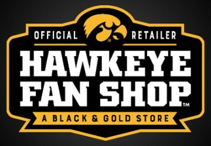

 cott Labz
cott Labz
Scott Labz is an analytics engineering firm delivering trustworthy, enterprise-grade data infrastructure. Bridging the modern data and web stack to fix broken metrics, align reporting systems, and run statistically rigorous experimentation programs.